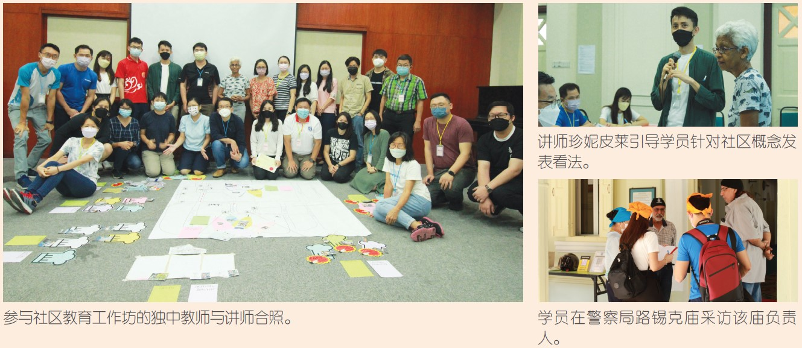

绘制社区地图 探索在地文化
在地学习（Place-based Learning）是近年来颇受瞩目的教育理念。多年前，各国积极推行户外教育，鼓励学校善用教室以外的空间，让知识传授连结真实情境。如今，在地学习结合户外教育的方式，提倡以地方社区及其环境作为课程和教学的起点，强化学校与社区联系，以培养学生关怀社区，积极参与社区活动，形塑公民参与能力。
为鼓励教师在日常教学中推展社区参与，董总“多元族群与文化发展专案”于2022年5月21日举办“绘制文化地图——社区教育工作坊”，邀得槟城艺术教育协会（Penang Arts-ED）创办人珍妮皮莱（Janet Pillai），向27位独中教职员授课，提出创新有趣的教学模式，让学员体验跨族群的交流乐趣。
讲师首先解释在地学习的基本概念，强调走入社区的重要性，将学习植基于在地现象与学生的生活经验。这种学习模式可以在菜市场、老人院、庙宇、田园等场景进行，惟其基本要素包含社区、学校师生的支持以及社区伙伴。她以先前在槟城的实践经验为例，说明在实际操作上如何结合文化绘图，投入在地议题，营造社区共同感。
此工作坊在隆雪华堂举行，学员分组后派往茨厂街周边社区的驻点实地演练，以文化交汇的角度，探讨其与整体社区的演变。各驻点包括鬼仔巷、谐街斯里马哈马里安曼兴都庙（Sri Mahamariamman Temple）、警察局路锡克庙（Gurdwara Sahib Polis）、新星光茶餐室、花卉店和移工光顾的服饰店。学员采访后返回隆雪华堂进行分组脑力激荡，并按考察搜集所得归纳分析，各自报告茨厂街周边社区的人文演变。珍妮皮莱讲评时主张对多元教育价值的追求，强调建立对社区的敏感度和认知，若能引导学生结合课本所学的知识启发思考、关注社区议题，收获更大。本次活动在颁发证书和学员大合照后划下句点。
总体来说，在地学习以当地自然或人文环境为教学素材，引导学生探索当地社区议题，进而接触社会，了解社会，学会关心社会，增强社会责任感。这一点与本专案的初衷不谋而合，实现跨文化、族群、世代的多元包容社会。